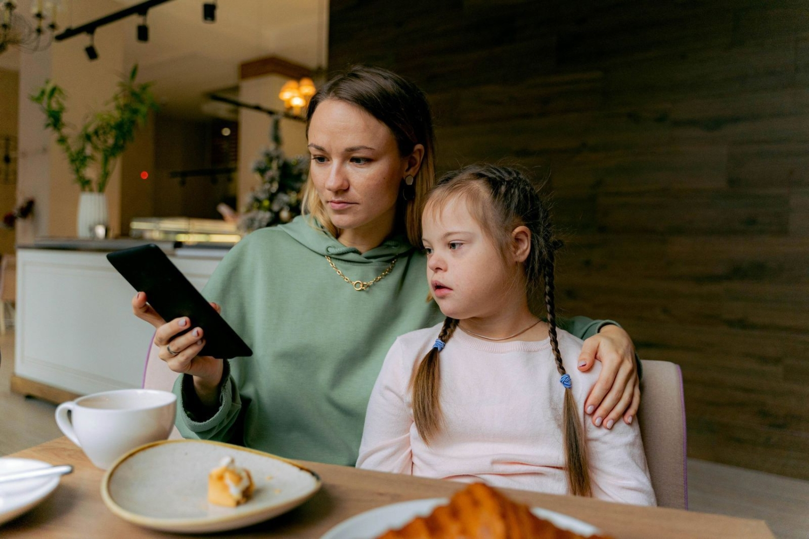
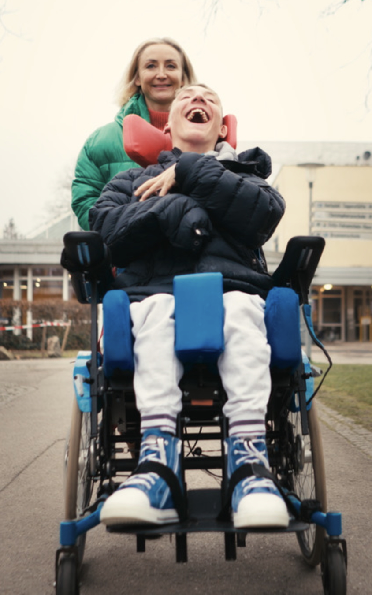
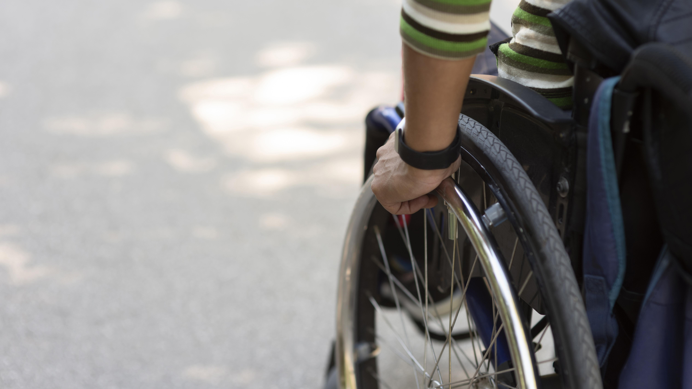

Verein Zukunft Wohnen für erwachsene Menschen mit Behinderung e.V.
Vom Bayerischen Landtag bis zum Deutschen Bundestag: Wir geben jungen Erwachsenen mit schwerster Behinderung eine Stimme.
Wenn junge Menschen mit komplexen Behinderungen erwachsen werden, endet oft jede Perspektive. Familien stehen allein da – ohne verlässliche Wohnformen, ohne Tagesstruktur, ohne Zukunft.
Wir, der Verein Zukunft Wohnen für erwachsene Menschen mit Behinderung e.V., sind Eltern, die für ihre schwerstbehinderten erwachsenen Kinder kämpfen und dabei ein System verändern wollen.
Unser Verein setzt sich für die nachhaltige Schaffung, Förderung und Erhaltung von Wohnheimplätzen in der Besonderen Wohnform (ehemals vollstationäres Wohnen) für erwachsene Menschen mit schweren Behinderungen ein. Intensivwohngruppen sind ein Teil dieser Besonderen Wohnform.
Wir treten für einen expliziten Rechtsanspruch auf einen Wohnheimplatz ein, der nicht an fehlenden Kapazitäten scheitern darf. Ebenso fordern wir ausreichende Förderstattplätze (einschließlich eines Rechtsanspruchs darauf) als verbindlichen Bestandteil der Tagesstruktur.
Daneben machen wir die Lebenswirklichkeit pflegender Eltern von erwachsenen Menschen mit schweren Behinderungen sichtbar und setzen uns für die konsequente Umsetzung des in der UN Behindertenrechtskonvention garantierten Wahlrechts der Wohnform ein, einschließlich des Wohnens in besonderen Wohnheimen für Menschen mit Behinderung.
Der Satzungszweck wird insbesondere durch Öffentlichkeitsarbeit sowie durch die Zusammenarbeit mit Institutionen, Einrichtungen und anderen Stellen verwirklicht, die sich im Sinne unseres Vereinszwecks betätigen.
Nach der Schule kommt das Nichts
18 Jahre lang erhalten Kinder und Jugendliche mit schwersten Behinderungen Förderung, Betreuung und Struktur. Dann endet die Schulpflicht – und damit oft jede Perspektive. Werkstätten und Förderstätten haben keine Kapazitäten. Wartelisten für Wohnheimplätze sind geschlossen oder erstrecken sich über Jahre. Der Rechtsanspruch auf ein selbstbestimmtes Leben in der Gemeinschaft (SGB IX) ist klar – doch die Versorgungslücke wächst. Nur noch wenige, große Träger bieten überhaupt diese lebenswichtige Intensivassistenz - und sind oftmals für die kommenden Jahre belegt.

Unsere Petition
Wir fordern:
- Ausreichendes Angebot für Intensiv-Wohnplätze
- Garantierte Tagesstruktur durch Förderstätten, Werkstätten und therapeutische Angebote
- Aufbau ausreichender Kapazitäten durch politische Task Force
- Kündigungsschutz für bestehende Wohnplätze
Petition auf change.org unterstützen
Unsere Meilensteine
Vom Landtag bis zum Deutschen Bundestag: Wir geben jungen Erwachsenen mit schwerster Behinderung eine Stimme:
Über 16.000 Menschen unterstützen unsere Forderungn mit ihrer Stimme. Das ist erst der Anfang.
Bayerischer Landtag
20.02.2025
Offizieller Sachverständigen-Status erreicht. Anhörung im Sozialausschuss Februar 2025
Sachverständigen-Status (PDF) Lese den Artikel über die Anhörung Schau dir das Video über die Anhörung auf YouTube
Bundestag
<-Datum->
Petition Pet 3-20-11-2171-029585 offiziell zur Erwägung an die Bundesregierung überwiesen – ein parlamentarischer Meilenstein.
Das Petitions-Votum: Ein parlamentarischer Auftrag
<-Datum->
„Die Petition wird der Bundesregierung zur Erwägung überwiesen... extreme Härten für Eltern... Schutzräume zwingend notwendig."
Der Deutsche Bundestag hat anerkannt: Die Versorgungslücke für junge Erwachsene mit schwersten Behinderungen ist real, die Härten für Familien sind extrem, und Handeln ist geboten. Jetzt muss die Politik Taten folgen lassen.

Werde aktiv: Wir brauchen Deine Hände, nicht nur Deine Unterschrift
Wir sind Eltern am Limit – und wir brauchen Verstärkung. Politik verändert sich nicht durch Appelle allein, sondern durch Menschen, die anpacken. Werde aktives Mitglied und hilf uns beim Networking, in der Pressearbeit oder beim direkten Kontakt zu Abgeordneten. Mit jede Stunde, die Du gibst, gibst Du schwerstbehinderte Menschen eine Perspektive.
Antrag auf aktive Mitgliedschaft (PDF)
Spenden
Unterstützen Sie unsere politische Arbeit. Als rein ehrenamtlicher Verein sind wir auf Spenden angewiesen, um Materialien für Kampagnen und Reisekosten zu Anhörungen zu finanzieren.
Bankverbindung für Spenden: Empfänger: Zukunft Wohnen e.V. Bank: Deutsche Bank IBAN: DE43 7007 0024 0090 9440 00 Spendenbescheinigungen stellen wir gerne ab einem Betrag von 200 € (darunter reicht der Kontoauszug für das Finanzamt) aus.
Networking
Verbinde Dich mit anderen Eltern, Einrichtungen und Verbänden. Gemeinsam erreichen wir mehr.
Politische Lobbyarbeit
Nutze unsere professionelle Vorlage, um Deine lokalen Abgeordneten auf die Situation schwerstbehinderter Menschen aufmerksam zu machen. Unser Template basiert auf dem offiziellen Bundestags-Beschluss und macht es einfach, konkrete Forderungen zu formulieren. Persönliche Briefe wirken – besonders, wenn viele sie schreiben.
Download Anschreiben-Template (PDF)
- Fertig formuliertes Anschreiben mit rechtlichen Grundlagen
- Persönlich anpassen
- Füge Deine Geschichte und lokale Bezüge hinzu
- Per E-Mail oder Brief versenden – und bleibe dran für Antworten
Folge uns auf Instagram
Werde unser Follower und nimm an unseren Instagram-Aktionen Teil!
Pressearbeit
Hilf uns, Geschichten zu erzählen, die bewegen. Mach die Anliegen schwerstbehinderter Menschen sichtbar.

Über uns: Eltern, die nicht aufgeben
Wir, der Verein Zukunft Wohnen für erwachsene Menschen mit Behinderung e.V. sind Eltern, die für ihre schwerstbehinderten Kinder kämpfen und dabei ein System verändern wollen.
Unser Verein hat die Vision, die Versorgungslücke im Hinblick auf Intensivbetreuung zu schließen. Wir kämpfen dafür, dass
- Der Rechtsanspruch auf die notwendige Intensivbetreuung nicht an der Verfügbarkeit scheitert
- Innovative Wohnformen für Intensivwohngruppen entstehen, die die Trägervielfalt erhöhen
- Die Förder- und Werkstätten als zwingender Bestandteil der Tagesstruktur anerkannt und gewährleistet werden
Unsere Stimmen
Schau dir ein Video über uns an:

Eltern berichten in unserem YouTube-Channel, was fehlende Wohnplätze und Tagesstruktur konkret bedeuten.
Was wir tun
- Politische Lobbyarbeit auf Landes- und Bundesebene
- Öffentlichkeitsarbeit und Sensibilisierung
- Vernetzung von Betroffenen und Fachleuten
- Sachverständigenarbeit in Ausschüssen
Satzung
Vereinsatzung downloaden (PDF)
Unsere Partner
Transparenz
Vorstand: Kathrin Higgen, Dr. Ulrich von Zanthier, Uwe Higgen. Gemeinnützig anerkannt.
Wir sind kein Beratungsdienst und können keine Rechtsberatung oder Einzelfall-Beratung leisten. Unsere Kraft und unser Fokus liegen auf der systemischen Veränderung – auf Gesetzen, Strukturen und politischen Entscheidungen, die ALLEN helfen. Für individuelle Unterstützung wende Dich bitte an Pflegestützpunkte, Bezirke oder spezialisierte Beratungsstellen.
Kontakt

Glossar: Wissen ist Macht
Die Welt der Behindertenhilfe ist voll von Fachbegriffen. Hier erklären wir die wichtigsten Konzepte – damit Sie mitreden können und Ihre Rechte kennen.
Besondere Wohnform
Früher "stationäres Wohnen" genannt. Gemeinschaftliche Wohnform mit 24-Stunden-Betreuung, hoher Fachkraftquote und spezialisierter Pflege für Menschen mit schwersten Behinderungen.
Intensivbetreuung
Betreuung für Menschen mit sehr hohem Pflege- und Unterstützungsbedarf (oft Pflegegrad IV-V), herausforderndem Verhalten oder medizinischer Komplexität. Erfordert hochqualifiziertes Personal.
Tagesstruktur & Förderstätte
Therapeutische und pädagogische Angebote außerhalb der Wohnform. Für Menschen, die nicht werkstattfähig sind. Essenziell für Teilhabe und Förderung.
Inklusive WGs: nicht geeignet
eine Wohngemeinschaft, in der Menschen mit und ohne Behinderung gemeinsam zusammenleben.
Menschen mit schwersten Behinderungen brauchen Schutzräume, Reizarmut, kleine Gruppen und spezialisierte Fachkräfte. Inklusive WGs können diesen Bedarf nicht decken.